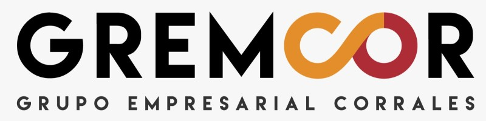
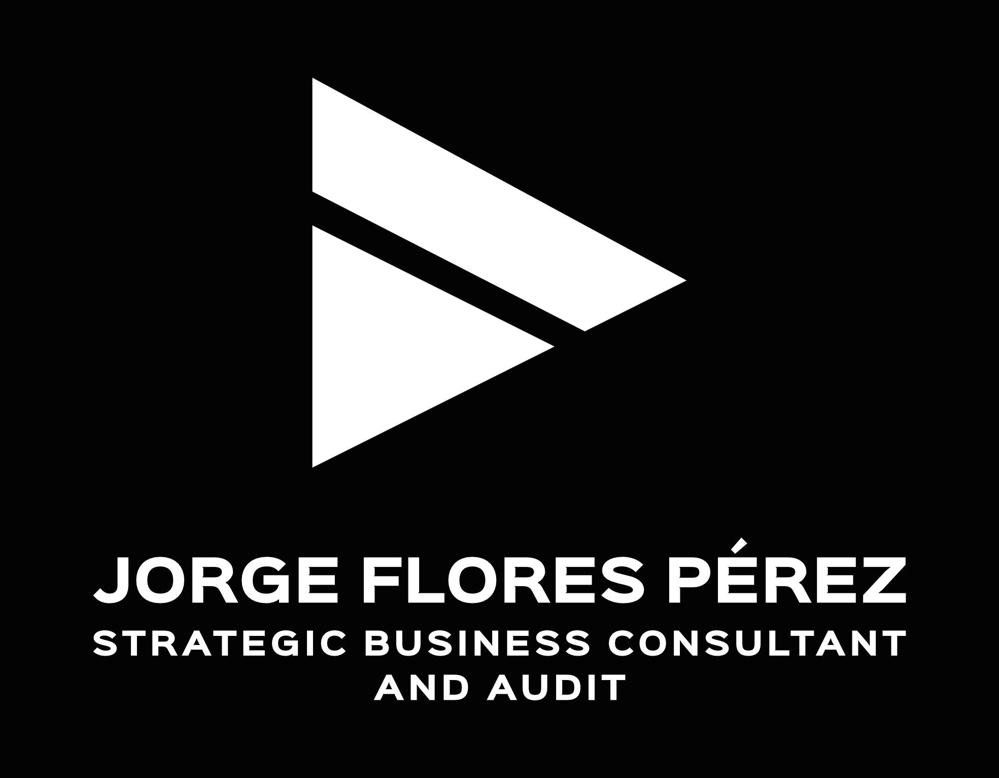
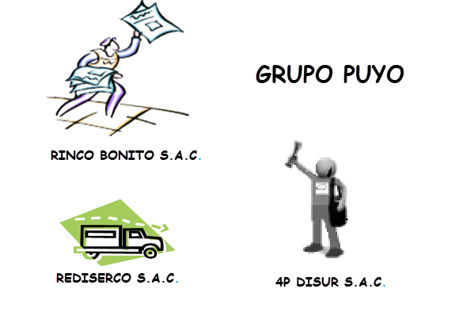
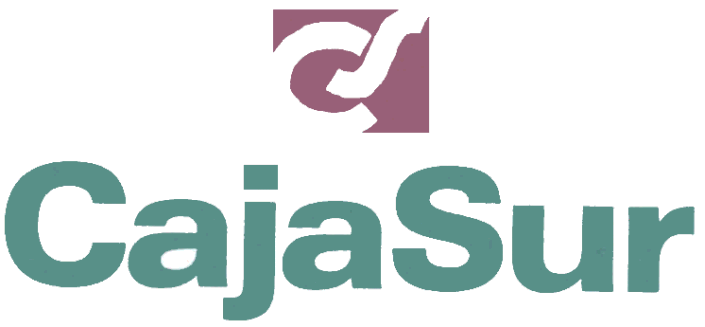
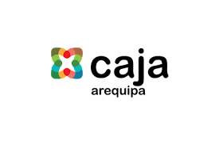

Expérience Professionnelle
Voici un aperçu détaillé de mon expérience professionnelle, mettant l'accent sur l'analyse commerciale, la gestion comptable et la programmation dans divers secteurs.

Comptable Général Corporatif - GRUPO GREMCOR
Avril 2022 - Avril 2023
Responsable de la consolidation et de l'évaluation financière du groupe, ainsi que de l'amélioration des systèmes et du contrôle interne. Encadrement de 23 personnes réparties en 4 équipes.

Consultant Stratégique - JJFP Strategic Business Consultant
Octobre 2013 – Actuellement
Conseil en finance, développement stratégique et analytique d'affaires, incluant des projets tels que la planification pour "GEDEK S.A.C." et "Coopecan Pérou". Développement de systèmes de coûts pour Ladrillera El Diamante S.A.Directeur Général - GEDEK S.A.C.
Juin 2009 – Avril 2014
Gestion des activités commerciales et financières, menant à un positionnement fort de l'entreprise sur le marché.

Consultant Administratif et Financier - Groupe Puyo
Août 2015 – Avril 2017
Responsable de la mise en place de systèmes comptables et financiers pour plusieurs entreprises du groupe, avec un focus sur le contrôle financier interne.Enseignant-Chercheur - Diverses Universités
2014 – Actuellement
Responsable de cours dans les domaines de la finance, des coûts, de l'audit et de la gestion stratégique dans plusieurs universités renommées du Pérou, notamment l'Université Technologique du Pérou et l'Université Catholique San Pablo.Comptable Général - EDPYME Nueva Visión
Octobre 2012 - Octobre 2013
Responsable de la gestion des états financiers et de la mise en œuvre de systèmes administratifs automatisés.Comptable Général - G&N Trading SCRL
Juin 2003 - Mars 2011
Gestion des états financiers et coordination avec les auditeurs externes pour assurer la conformité et la précision des rapports.Assistant Financier - Caja Rural de Ahorro y Crédito Quillabamba
Mars 2008 - Janvier 2009
Études de rentabilité des financements et élaboration de rapports pour la gestion de la trésorerie et des fonds disponibles.

Fonctionnaire Comptable - Caja Rural de Ahorro y Crédito Cajasur
Avril 2005 - Mars 2008
Suivi des portefeuilles de crédits et responsable adjoint des états financiers. Implémentation du système SARABANK pour la gestion comptable.

Évaluateur de Crédit - Caja Municipal de Arequipa
Octobre 2004 - Janvier 2005
Évaluation de dossiers de crédits pour garantir la conformité réglementaire, suivi des portefeuilles clients.